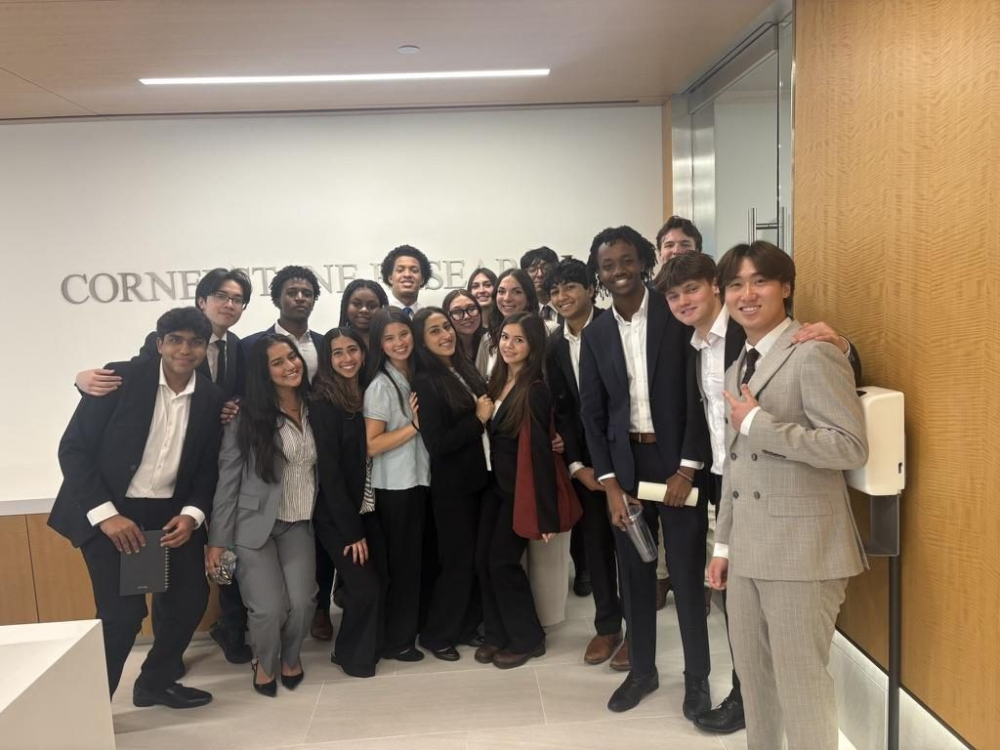
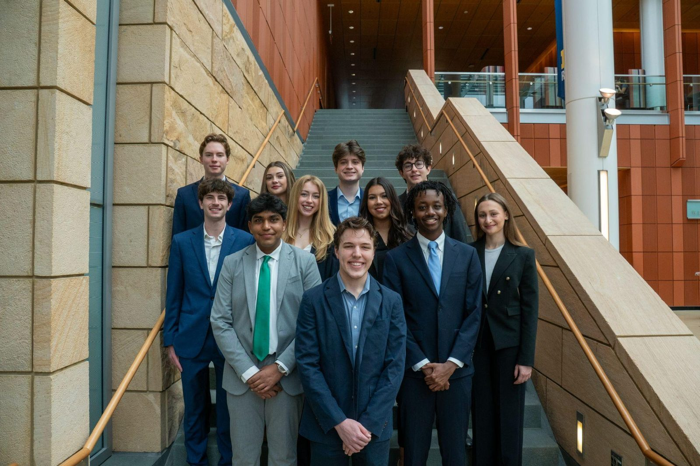
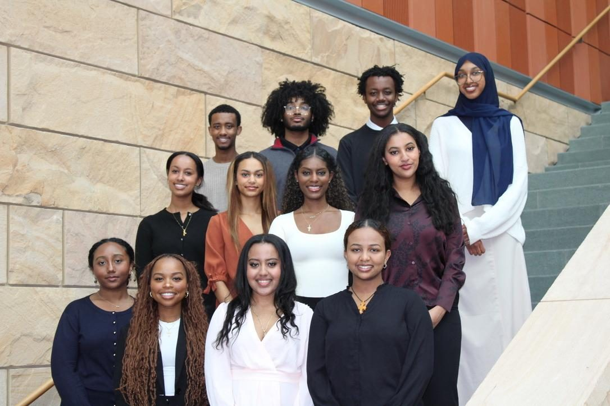
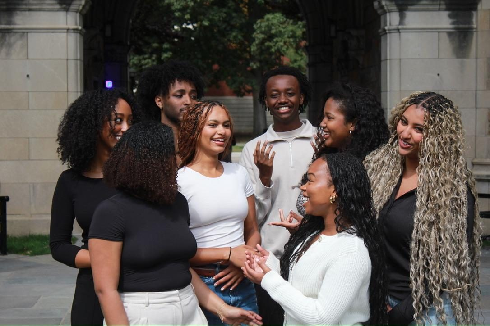
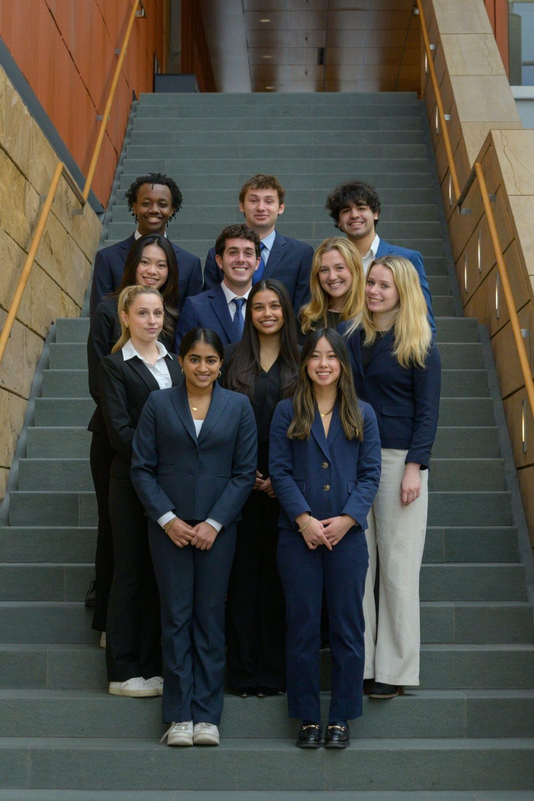
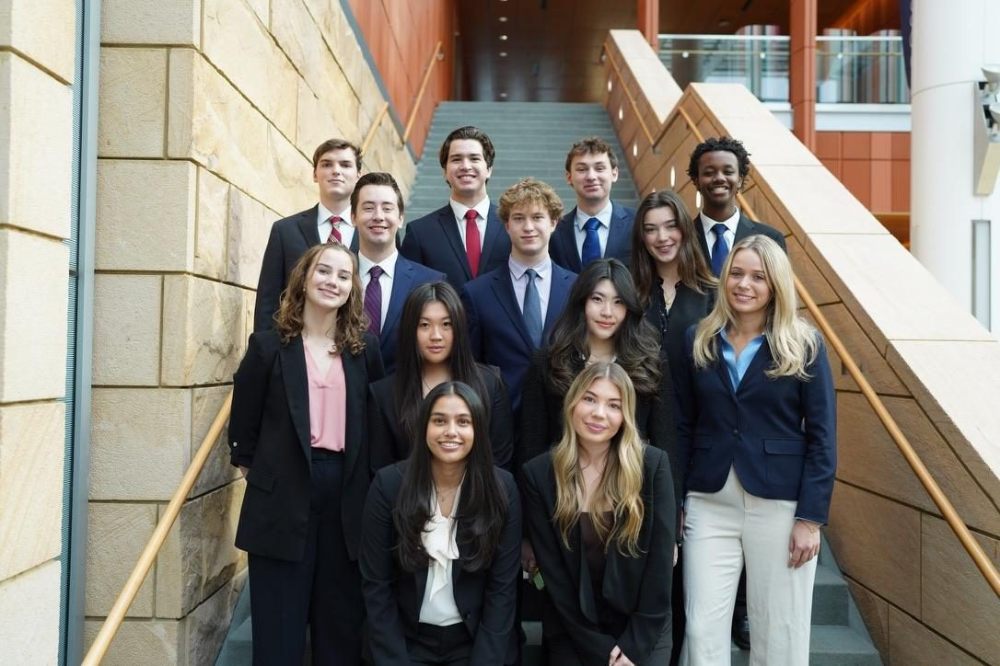

Kappa Omega Alpha (KOA)
Plan professional treks and internal operations for the pre-professional fraternity, and created the UMLC legal case competition and conference from the ground up.



East African Students Association (EASA)
Co-founded EASA to give students of East African descent a space to thrive — planning events, booking spaces, and partnering with the university on cultural collaborations across other organizations.


Michigan Business Law
Contribute to the research showcase and lead DEI initiatives while serving on the executive board.


Model United Nations at UM (MUNUM)
Compete and staff conferences through the University of Michigan's Model UN organization, sharpening research, negotiation, and public-speaking skills.
Public Service Internship Program (PSIP) — DC Cohort
Selected for the University of Michigan's competitive PSIP DC cohort, a program placing students in public-service internships in Washington, D.C. with funding and structured professional development.
Michigan Pre-Law Society
Active in the pre-law community at Michigan, engaging with law-school preparation, speakers, and networking as I work toward a future in law.
SIBS — Support for Incoming Black Students
Mentor incoming Black students at Michigan — one of the roles I'm most proud of, helping new students find their footing and community on campus.
Maize & Blue Cupboard
Volunteer with the university's food-security resource, plus soup kitchens across Detroit.